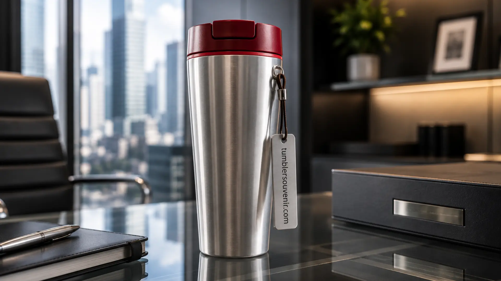

Ide Souvenir Elegan HUT RI untuk Mitra dan Klien Bisnis
Ringkasan
Souvenir korporat elegan bertema HUT RI adalah hadiah yang dirancang untuk menjaga hubungan baik dengan mitra dan klien bisnis melalui momen kemerdekaan, dengan tetap mengedepankan kesan profesional dan tidak berlebihan. Pemilihan souvenir yang tepat pada momen ini dapat memperkuat citra perusahaan sekaligus mempererat relasi jangka panjang dengan pihak eksternal.
Daftar Isi
Mengapa Souvenir HUT RI Penting untuk Relasi Bisnis?
Souvenir bertema HUT RI memberikan momentum alami bagi perusahaan untuk menyapa kembali mitra dan klien bisnis tanpa kesan terlalu formal seperti pertemuan bisnis pada umumnya. Momen kemerdekaan dianggap sebagai kesempatan yang netral dan positif, sehingga pemberian souvenir pada waktu ini cenderung diterima dengan baik oleh berbagai kalangan relasi bisnis.
Selain itu, souvenir yang diberikan secara konsisten setiap tahun pada momen HUT RI dapat menjadi bagian dari strategi menjaga top of mind klien terhadap perusahaan, terutama jika desain souvenir menampilkan identitas brand secara elegan dan tidak mengganggu kesan tema kemerdekaan itu sendiri.

Apa Saja Karakteristik Souvenir Korporat yang Terlihat Elegan?
Souvenir korporat yang terlihat elegan umumnya memiliki desain yang bersih, tidak terlalu ramai dengan elemen dekoratif, serta menggunakan material yang berkualitas dan tahan lama. Warna yang digunakan cenderung terbatas pada dua hingga tiga warna utama agar kesan visual tetap rapi dan mudah dikenali.
Selain aspek visual, kesan elegan juga ditentukan oleh fungsi produk itu sendiri. Souvenir yang memiliki nilai guna tinggi dalam aktivitas harian penerima, seperti alat tulis premium, tas kerja, atau tumbler custom, cenderung dianggap lebih bernilai dibanding souvenir yang hanya bersifat dekoratif atau seremonial semata.
Bagaimana Souvenir Bertema Kemerdekaan Dapat Tetap Terlihat Profesional?
Agar souvenir bertema kemerdekaan tetap terlihat profesional, elemen tema HUT RI sebaiknya ditampilkan secara halus, misalnya melalui pemilihan warna merah putih sebagai aksen, bukan sebagai elemen dominan yang berlebihan. Logo perusahaan tetap perlu ditonjolkan secara proporsional agar kesan branding tidak hilang di antara elemen tema kemerdekaan.
Pendekatan minimalis pada desain souvenir cenderung lebih diterima di lingkungan bisnis formal dibanding desain yang terlalu ramai dengan ornamen. Kesederhanaan pada desain justru sering memberikan kesan lebih premium dan sesuai untuk relasi bisnis tingkat korporat.
Jenis Souvenir Apa Saja yang Cocok untuk Mitra Bisnis Saat HUT RI?
Beberapa jenis souvenir yang umum dipilih perusahaan untuk mitra bisnis pada momen HUT RI antara lain tumbler custom bertema kemerdekaan, alat tulis premium dengan ukiran logo perusahaan, serta perlengkapan kerja lain yang memiliki nilai guna tinggi dalam aktivitas profesional sehari-hari.
Di antara pilihan tersebut, tumbler custom sering menjadi favorit karena kombinasi antara fungsi harian yang tinggi, kemudahan personalisasi desain, serta daya tahan produk yang membuat kesan dari perusahaan pemberi tetap terasa dalam jangka panjang oleh mitra bisnis yang menerimanya.
Souvenir korporat elegan bertema HUT RI menjadi cara yang efektif bagi perusahaan untuk menjaga relasi dengan mitra dan klien bisnis, selama desain yang digunakan tetap mengedepankan kesederhanaan, fungsi, dan proporsi antara tema kemerdekaan dengan identitas brand perusahaan.
Jika Anda sedang mencari ide souvenir HUT RI yang elegan sekaligus fungsional untuk mitra bisnis, tumblersouvenir.com dapat membantu mewujudkan tumbler custom dengan desain eksklusif dan proses pemesanan yang mudah. Kunjungi tumblersouvenir.com sekarang untuk mulai konsultasi kebutuhan souvenir bisnis Anda.